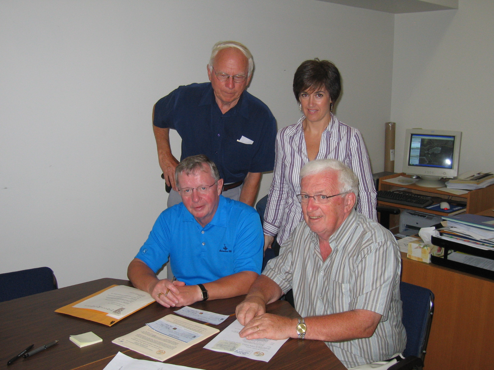

No. 82 March 5, 2008

Standing: Don Glendenning and Katy Baker
Seated: Ken Gillis (L) Norman Carruthers
Arts Stabilization Project Finishes
Launched in May 2004, the Island Arts and Heritage Stabilization Program was designed to assist PEI cultural organizations to become stronger and more viable over the long term.
The program focused on
Sound governance policies and practices,
Financial management practices,
Overall organizational effectiveness,
Audience development, and
Short and long term planning.
Although the stabilization initiative was led by the Community Foundation of Prince Edward Island, the IAHSP program operated under its own Board chaired by Ken Gillis, Donald Glendenning, Hon. Marion Reid, Jeannette Arsenault, Tanya O'Brian, Darrin White, Ron Irving and Harry Holman with Katy Baker as the Executive Director.
The delivery model was simple and included:
A thorough assessment led by an external assessor,
A business plan including timelines.
A formal agreement with each participating organization based on the business plan.
Technical assistance which included a mixture of group workshops, software, hardware and one-on-one technical assistance sessions
Strategic investments tailored to needs of organization, and
A semi-annual review of progress with the Executive Director.
From the first round of proposals, the following six organizations were selected: Carrefour Theatre, College of Piping, Indian River Festival, Jubilee Theatre, PEI Symphony and the Victoria Playhouse. Later an Outreach Program was launched and included the following: Arts Longa/The Guild, Farmers Bank of Rustico, PEI Crafts Council and PEI Music Award Association.
Funding for the initiative consisted of $200,000 from each of the Department of Canadian Heritage, the PEI Department of Community and Cultural Affairs and the Samuel and Saidye Bronfman Family Foundation. An additional $200,000 was raised from the private sector.
CFPEI thanks the many people who gave willingly of time and talent to ensure the success of the program
____________________________________
The Community Foundation News is an informal newsletter, in electronic form only, edited and published by, and at the whim of, Don Glendenning. Think of it as a letter from a friend. Forward this to others who may be interested. For further information, check our website, www.cfpei.ca or Email me at: don@glendenning.net